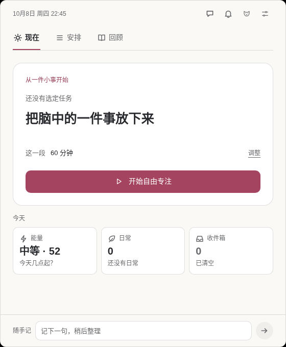
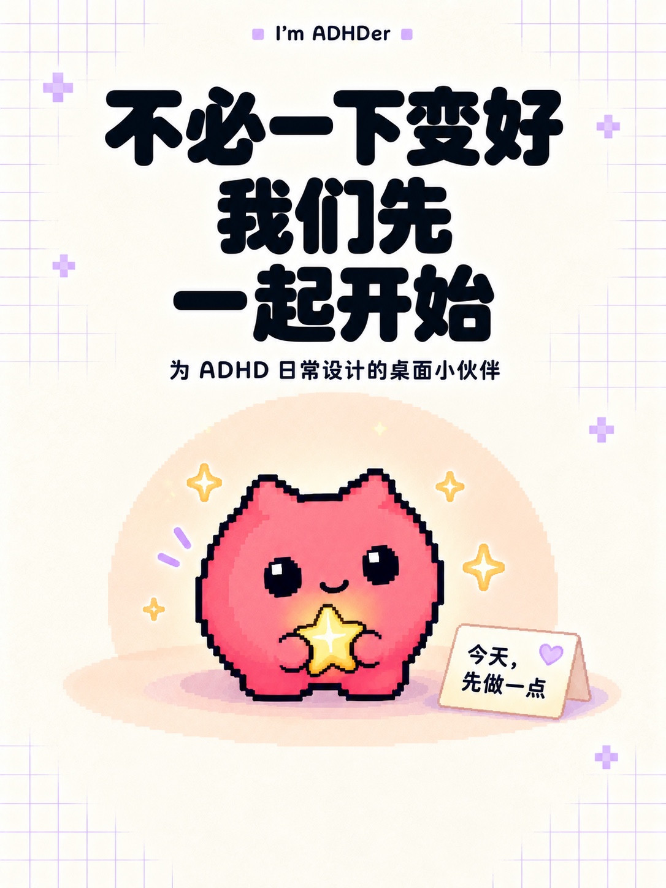
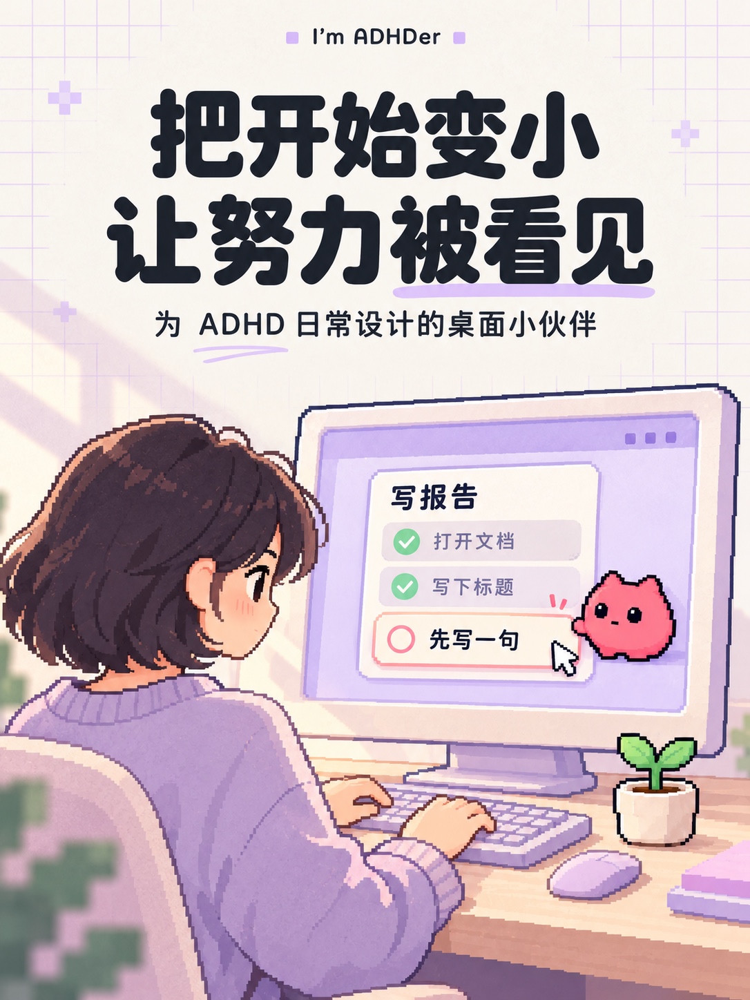
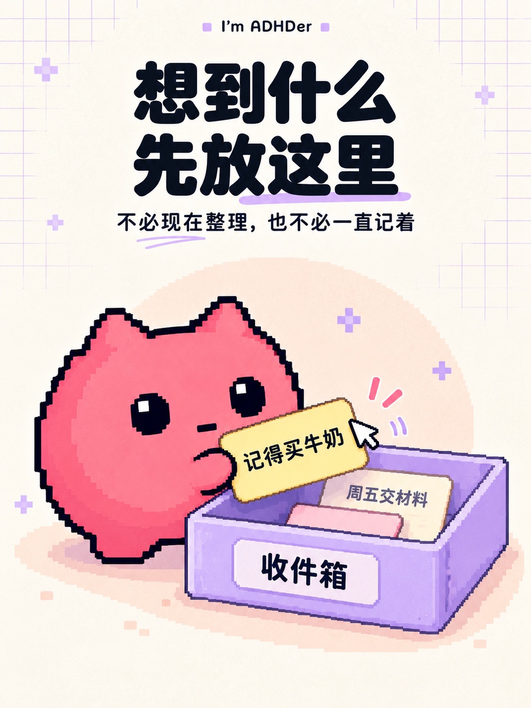
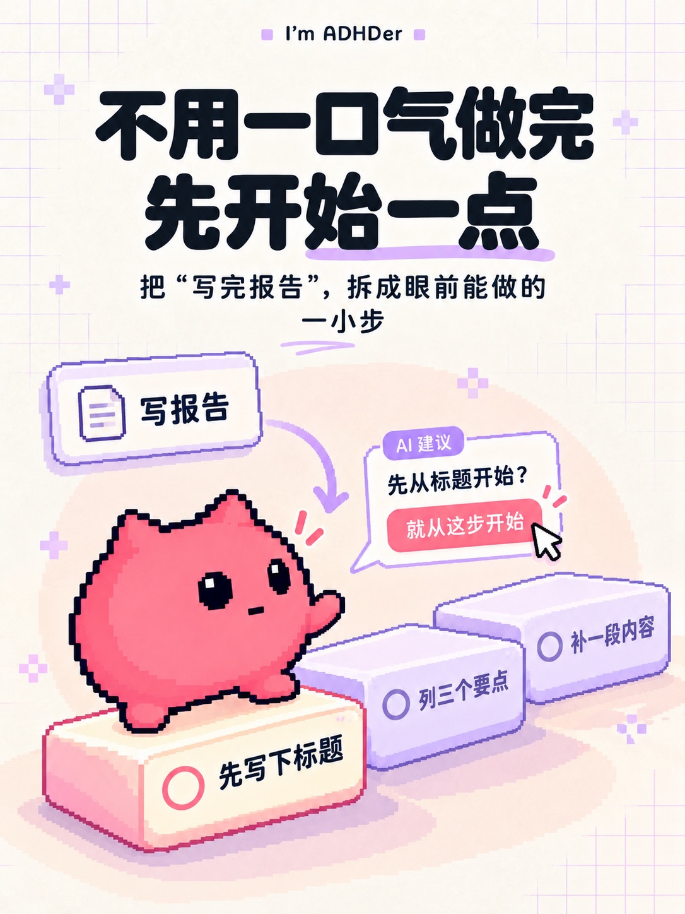
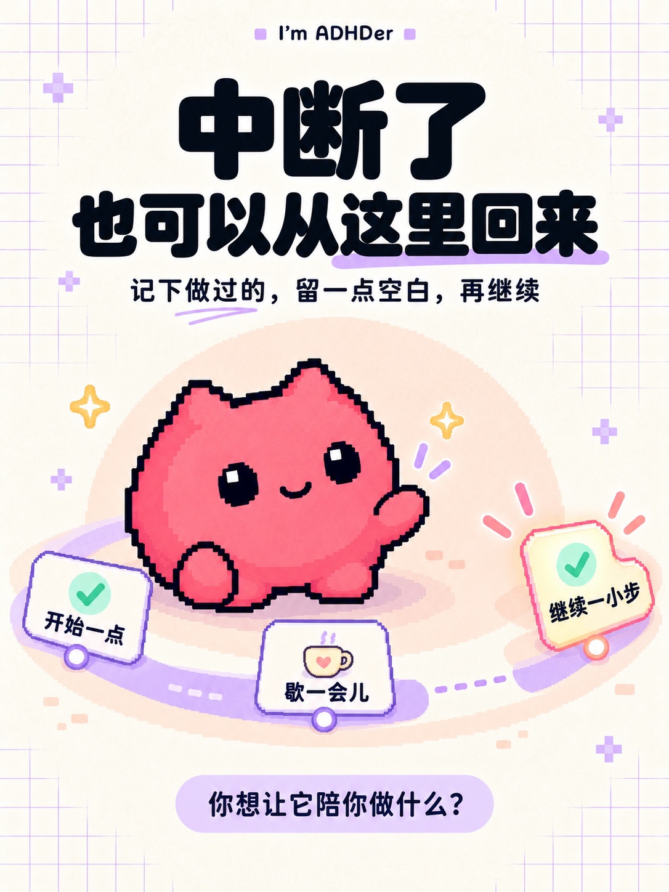
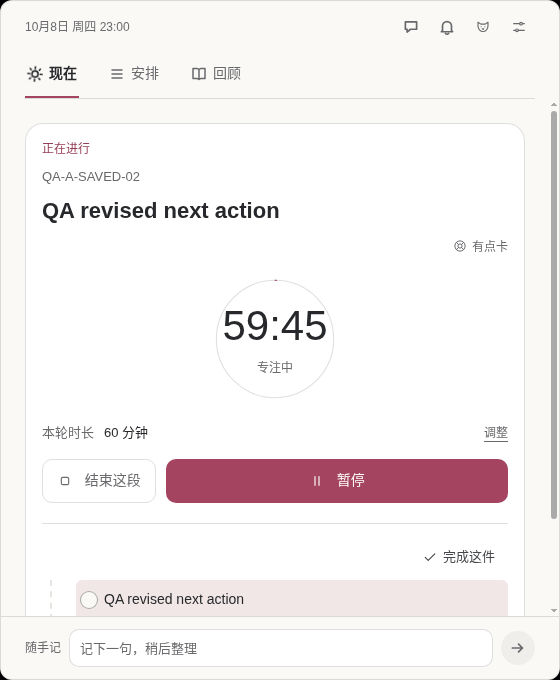
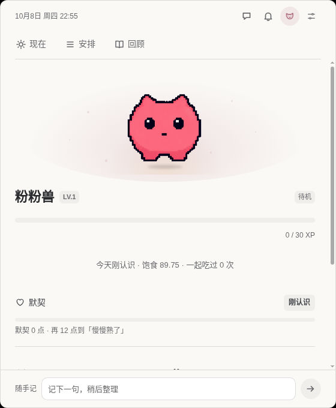

01 / CAPTURE
Let the thought land.
Write one line now. Sort it later into a task, a routine, or something worth keeping. Quick capture stays close, even during a focus session.
A thought doesn't need a plan yet.
DESIGNED FOR ADHD DAYS. AT YOUR PACE.
把开始变小，让努力被看见。
For the ideas that arrive all at once.
And the days you just need somewhere to start.


MADE FOR THE WAY DAYS REALLY GO
bubu (小步) keeps ideas, tasks, and focus close at hand, with a desktop companion along for the ride. Capture first. Choose one small action. Leave yourself a place to pick up again.
THE LITTLE-STEP WAY
先放下来。先开始一点。
中断了，也可以回来。



A CLOSER LOOK
Real app screens.
Small, practical places to begin.
Write one line now. Sort it later into a task, a routine, or something worth keeping. Quick capture stays close, even during a focus session.
A thought doesn't need a plan yet.
Pick a duration. See time passing. Pause when you need to, then leave a next step for your return.

Meet Dango, interact, feed, and dress your companion. Quiet mode, reduced motion, and reminders stay under your control.

App preview (Linux)
YOU SET THE PACE
A title is all a task needs to begin. Add steps, dates, and estimates only when they help. If you're stuck, try a smaller first step.
Interruptions and missed days don't erase progress. Pause, resume, and keep a note of where to start next. No streak-loss penalties.
Core tasks and focus work without AI. If you choose to configure a provider, selected context is sent to that provider. Review AI suggestions before applying them.
BRING A LITTLE COMPANY TO YOUR DESKTOP
0.0.2-dev.1 testing preview · manual installation and updates.
x64 · 0.0.2-dev.1 · unsigned test build
Unsigned; SmartScreen may warn or block installation.
Download Windows test buildApple silicon (arm64) · 0.0.2-dev.1 · restricted test
Ad-hoc signed, without Developer ID or notarization. Gatekeeper's local distribution assessment rejects this build. Direct startup of a DMG-installed copy passed; browser-download/Finder acceptance was not tested.
Mac 受限测试包：ad-hoc 签名，无 Developer ID 或公证。Gatekeeper 本地分发评估拒绝此包；DMG 副本直接启动通过，不代表浏览器下载/Finder 打开已验收。
Testing preview: 0.0.2-dev.1. Release tag: v0.0.2-dev.1. In-app updates remain unavailable. The separate testing-updates feature is not included; install and update manually.
Valid bubu18 profiles need explicit confirmation and a complete private backup to upgrade to schema19. Keep that backup: older versions cannot open schema19. Verified offline extraction needs a new, nonexistent directory; it does not automatically roll back or switch the live profile.
Check the release notes for validation scope and remaining limits. Do not disable operating-system security protections or remove quarantine to install this test build.
Release notes · SHA-256 checksums · All releases · Historical r4 notes · Source & setup instructions